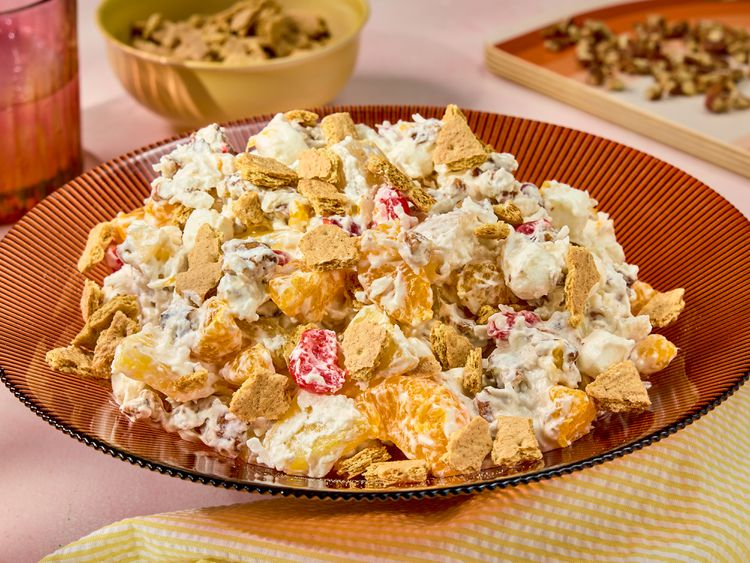

Millionaire Cheesecake Salad
Home

Description
This millionaire cheesecake salad is a fun spring treat, a dessert salad
that is perfectly balanced—sweet and nutty, with a subtle tang from the canned fruit,
all folded into a creamy, airy, cream cheese mixture.
Ingredients
- 8 oz of cream cheese, softened
- 3 tablespoons of confectioner's sugar
- 0.5 cups of French vanilla dairy creamer
- 8 oz of frozen whipped topping
- 15 oz of canned mandarin oranges, drained
- 20 oz of canned pineapple chunks in juice, drained
- 15 oz of canned pear chunks, drained
- 3 cups of miniature marshmallows
- 16 oz of jar maraschino cherries, drained, halved and patted dry
- 7 oz of package sweetened flaked coconut
- 2 cups of chopped toasted pecans
- 4 graham cracker sheets, broken into 0.5 inch pieces
Steps
- Beat cream cheese in a large bowl with an electric mixer on medium-high speed until smooth and fluffy, about 2 minutes. Beat in powdered sugar until incorporated and smooth. With beaters running, slowly drizzle in creamer until smooth and fully combined, about 1 minute total. Fold in whipped topping.
- Add oranges, pineapple, pears, marshmallows, cherries, coconut, and pecans to cream cheese mixture; fold until fully coated. Serve immediately or refrigerate until chilled, about 1 hour.
- Just before serving, sprinkle evenly with graham crackers.